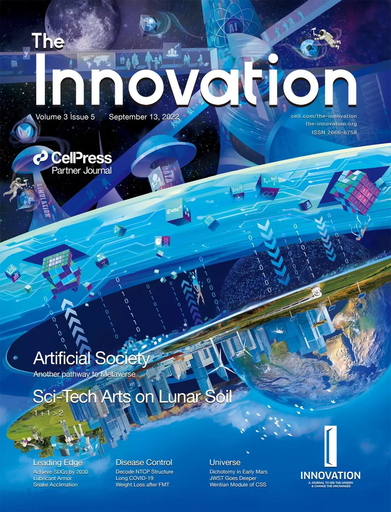

Sihang Qiu is an associate professor at College of Systems Engineering of NUDT and Hunan Institute of Advanced Technology (HIAT). He received his Ph.D. from the Web Information Systems group of TU Delft in 2021. He holds a M.Sc. and a B.Eng. in Cybernetics. Sihang is interested in developing novel Human-AI Interaction techniques. His research focuses on:
- Human-Centered AI
- Crowd Computing
- Conversational Agent
- User Interface Design
News
- Our work "Towards parallel intelligence: An interdisciplinary solution for complex systems" has been accepted as a review paper at The Innovation.
- EurekAlert! [4 Sep, 2023]: Human-AI collaboration improves source search outcomes.
- Our work "Crowd Sensing Intelligence for ITS: Participants, Methods, and Stages" has been accepted by IEEE TIV.
- Our work "Leveraging Human-AI Collaboration in Crowd-Powered Source Search: A Preliminary Study" has been accepted by Journal of Social Computing.
- Our work "Perspective: Leveraging Human Understanding for Identifying and Characterizing Image Atypicality" has been accepted at IUI 2023.
- Our work "Crowd-Powered Source Searching in Complex Environments" received Best Student Paper Award at ChineseCSCW 2022.

